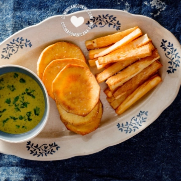

¡Mis guarniciones favoritas! A veces pido pollo frito para
tener estos deliciosos platos al lado. Me encanta lo crujiente
de la batata por fuera y lo dulce y suave que es por dentro.
Tambien me encanta ese sabor mantecoso dorado de la yuca acompañada
de ketchup.

Ingredientes
1 lb de batata pelada
1 lb de yuca pelada
4 tazas de agua
1 cucharada de sal
2 tazas de aceite para freír
Pasos
Corta la batata en rebanadas de ¼" [½ cm] de grosor (si usas yuca corta en palitos).
Mezcla agua con la sal y sumerge la batata o yuca en el agua de sal. Deja reposar por media hora. Saca del
agua y seca la batata (o yuca) con una toalla de papel.
Calienta el aceite a fuego medio. Fríe hasta que doren, y deja reposar en una toalla de papel para absorber el
exceso de grasa.
Esta receta fue copiada de la página www.cocinadominicana.com